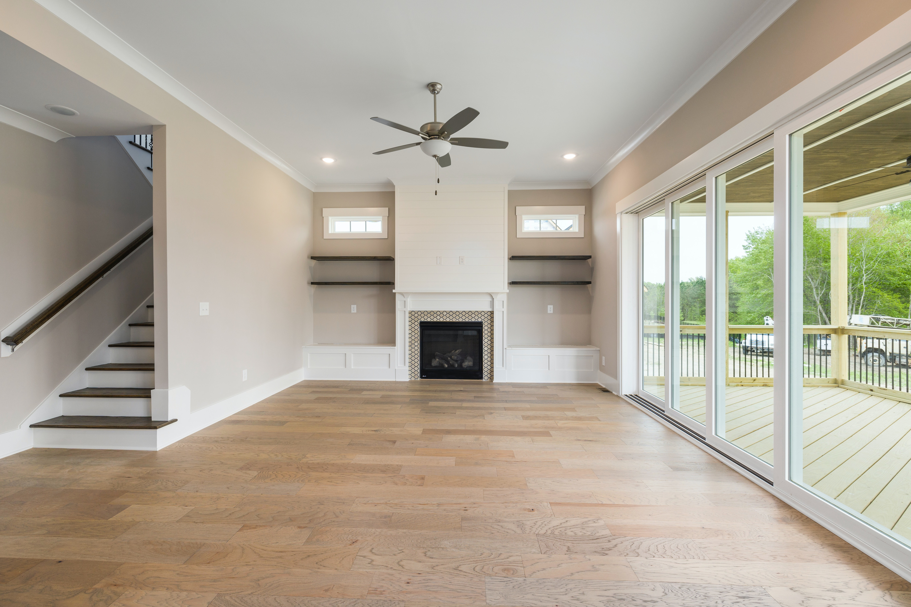

Before you begin check to make sure you have the necessary tools to get the job done. You will of course need the ceiling fan and any parts that came in the box with it. You will also need a ladder, screwdriver, wire tester, pliers, wire cutters, a mask and goggles. By having all the tools ready you will save yourself time and frustration from having to start and stop the project while you locate yet another tool you need.
Before you begin you should read all the instructions that can in your ceiling fan box. Since ceiling fans are usually used to replace or update an existing light fixture all the wiring should already be done for you. If you are installing a new fan in a non-wired location and do not have a clue about wiring please for your own safety consult a professional. One thing you must do before you do any wiring or installation is to make sure the power is off and no one will turn it back on until you are finished.
After the electricity is off and your sure no one will turn it back on you need to first remove the existing light fixture. Many times this is simply done by unscrewing a few screws and disconnecting the wires. Next you will need to measure and possibly cut the correct size hole. Remember the rule of thumb: Measure twice cut once. This will save you from making the mistake of cutting the hole too big to fit the fan you have purchased.
Next you will need to install the new electrical box that came in the box with your new ceiling. You will then need to glue on the ceiling medallion if your ceiling fan has one, if not skip to the next step. After the medallion is in place attach the ceiling plate. Take special care to make sure the screws are tight. Loose screws are one of the common issues a fan will make noise when it is on.
Then you will need to assemble the ceiling fan components. By following the ceiling fan instructions this should be a simple job. Then you will take the components up the ladder to connect the wires from the ceiling to the ceiling fan. Securely mount your ceiling fan to the ceiling again taking special care to make sure the screws are in securely to reduce any noise the fan might make when it is working.
The final step when installing your ceiling fan is the attach the blades and the light fixture. You will also need to pay special attention to securing the blades to the base of the fan. Once you have completed all of these steps you can turn your electricity back on and start enjoying the breeze from your brand new fan.